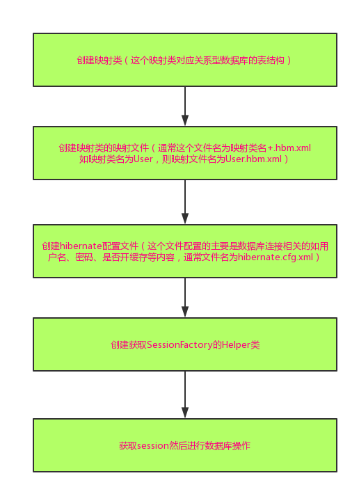
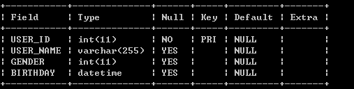
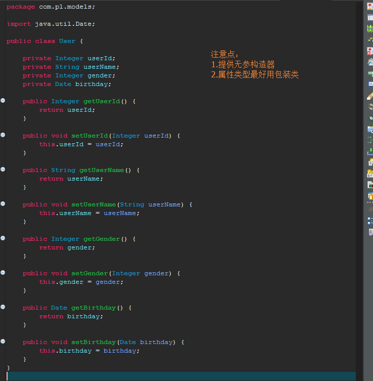
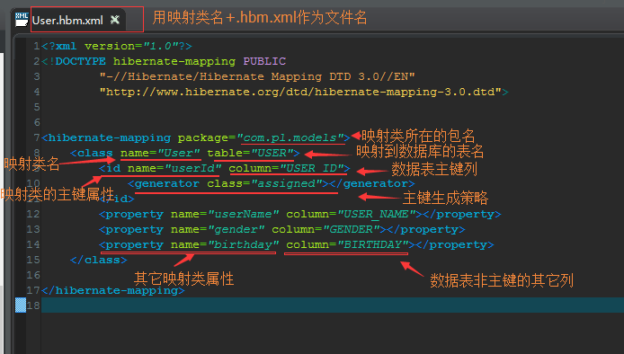
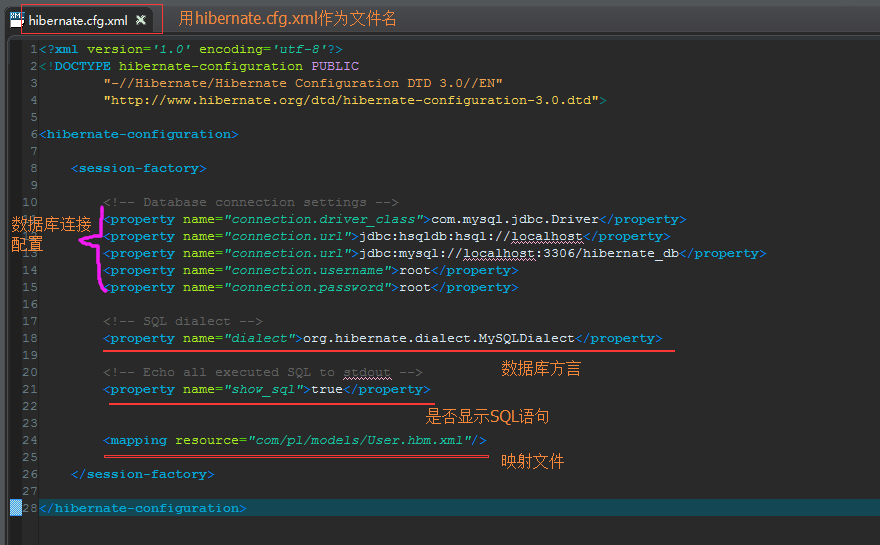
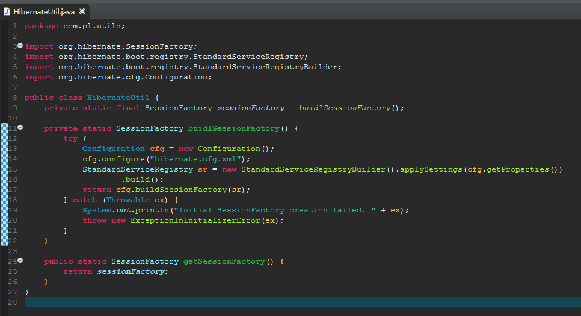
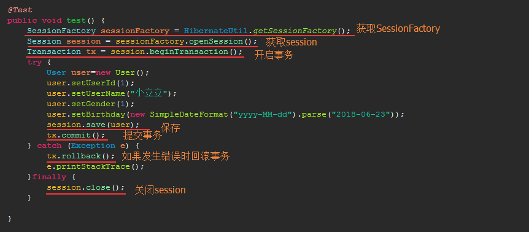

整体流程图

第一步：创建映射类
参考官方文档1.1.2. The first class
假设在mysql数据库hibernate_db中存在数据表如下：

则创建的映射类如下：

第二步：创建映射文件
参考官方文档1.1.3. The mapping file
创建映射文件如下：

第三步：创建hibernate的配置文件
参考官方文档1.1.4. Hibernate configuration
创建hibernate的配置文件如下：

第四步：创建获取SessionFactory的Helper类
参考官方文档1.1.6. Startup and helpers
创建获取SessionFactory的Helper类如下：

第五步：获取session进行数据库操作
参考官方文档1.1.7. Loading and storing objects

代码执行完毕后看到数据库里面已经存在对应的记录了：